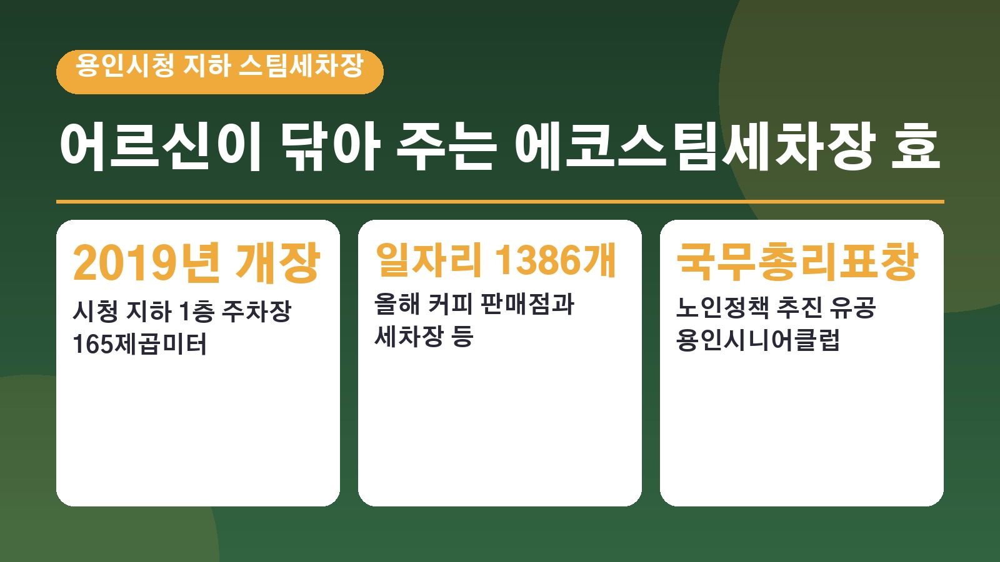
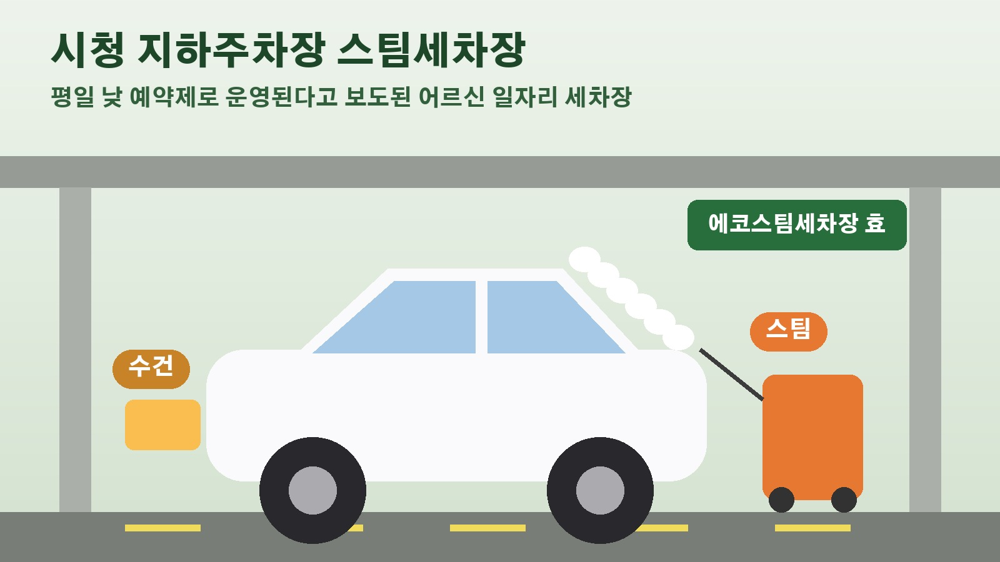

용인시청 지하 스팀세차장 효, 어르신들이 닦아 주는 세차장과 국무총리표창 받은 용인시니어클럽 이야기

동네 스팀세차 가격 보고 한숨 쉬신 적 있으시죠. 그런데 용인시청 지하주차장에는 어르신들이 직접 차를 닦아 주는 스팀세차장이 있습니다. 이름도 정겨운 에코스팀세차장 효인데요. 이 세차장을 운영하는 노인일자리 기관 용인시니어클럽이 노인정책 추진 유공으로 국무총리표창을 받았다는 소식이 10월 16일 뉴시스를 통해 전해졌습니다. 이 소식과 함께 그동안 보도된 세차장 이야기를 정리해 봤습니다.
올해 커피 판매점과 세차장 등에서 일자리 1386개
뉴시스 보도에 따르면 사회복지법인 연꽃마을이 위탁 운영하는 용인시니어클럽은 2010년 문을 연 뒤 지금까지 어르신 1만2340명에게 일자리를 제공했습니다. 올해에만 커피 판매점과 세차장 등에서 일자리 1386개를 운영하고 있다고 해요. 전국 최초로 노인일자리 빨래방 가맹 체계를 만들었고, 이마트에 어르신 일자리 사업장을 입점시키기도 했습니다. 식품 제조 사업장은 해썹 인증을, 음료 판매점은 사회적기업 인증을 받았고요. 2024년에는 한국산업안전보건공단에서 위험성평가 우수사업장으로 인정받았고, 보건복지부 수행기관 평가 우수기관에 이어 이번 국무총리표창까지 받았습니다.
에코스팀세차장 효는 어떻게 생겼나
이 세차장은 2019년 1월 용인시청 지하 1층 태교음악당 앞 주차장에 문을 열었습니다. 당시 브릿지경제 보도를 보면 경기도와 용인시가 절반씩 1억5천여만 원을 들였고, 시청 주차 공간 165제곱미터를 무상으로 내줘 만들었다고 해요. 처음 문을 열 때는 만 60세 이상 어르신 16명이 두 명씩 짝을 지어 평일에 하루 3시간씩 격일로 일하는 구조였습니다. 세차장 이름에 효라는 글자가 붙은 것도 어르신들이 일하는 곳이라는 뜻을 담은 것이고요.
2021년 보도 당시 요금과 운영 방식
2021년 5월 중앙일보가 이곳을 찾았을 때는 만 70세 이상 어르신 16명이 일하고 있었습니다. 평일 하루 3시간씩 한 달 평균 16번 일하고 한 달에 약 41만 원을 받는다고 했어요. 세차장은 월요일부터 금요일까지 오전 10시부터 오후 4시까지 예약제로 운영됐고, 예약이 없을 때는 현장에서 바로 세차를 받을 수도 있었습니다. 요금은 국산차 기준으로 소형차 2만2천 원, 준중형차 2만4천 원으로 주변 스팀세차장의 절반 수준이라고 소개됐고, 하루 평균 10대에서 12대가 찾는다고 했습니다. 다만 이 요금과 운영 시간은 2021년 보도 기준이라 지금은 달라졌을 수 있어요.

꼼꼼한 세차와 확실한 다시 닦기
당시 기사에 소개된 단골 손님은 송화가루 철마다 차가 금세 더러워지는데 이곳은 값이 저렴해 자주 찾는다고 했습니다. 실제로 노란 송화가루를 뒤집어쓴 차가 30분 만에 새 차처럼 윤이 났다고 해요. 어르신들이 일하다 보니 가끔 덜 닦인 부분이 생기기도 하는데, 손님이 말하면 그 부분을 다시 청소해 주는 방식으로 만족도를 높이고 있다는 것이 용인시의 설명이었습니다. 직원들은 차가 들어올 때마다 내 차라는 마음으로 닦는다고 말했고요.
지금 이용하거나 일하고 싶다면
용인시니어클럽의 2026년 공동체사업단 모집 안내에도 에코스팀세차장 효가 들어 있습니다. 공동체사업단은 만 60세 이상이면 신청할 수 있고, 근무 시간과 급여는 근로계약에 따라 정해진다고 안내돼 있어요. 세차를 맡기고 싶은 분이든 일자리를 찾는 어르신이든, 현재 요금과 예약 방법, 모집 여부는 용인시니어클럽에 직접 확인하시는 것이 가장 정확합니다.
참고한 기사: 뉴시스 진화하는 노인일자리, 용인시니어클럽 혁신적 변화 눈길 2026년 10월 16일, 중앙일보 세차 갔더니 수건 든 70대 어르신들 나온다 2021년 5월 9일, 브릿지경제 시 청사에 스팀세차장 열어 노인 일자리 창출 2019년 1월 31일
태그
에코스팀세차장효 용인스팀세차 스팀세차 용인시니어클럽 노인일자리 용인시청 세차장 시니어일자리 착한세차장 손세차